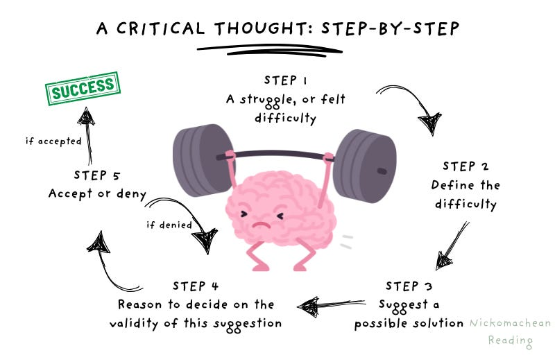
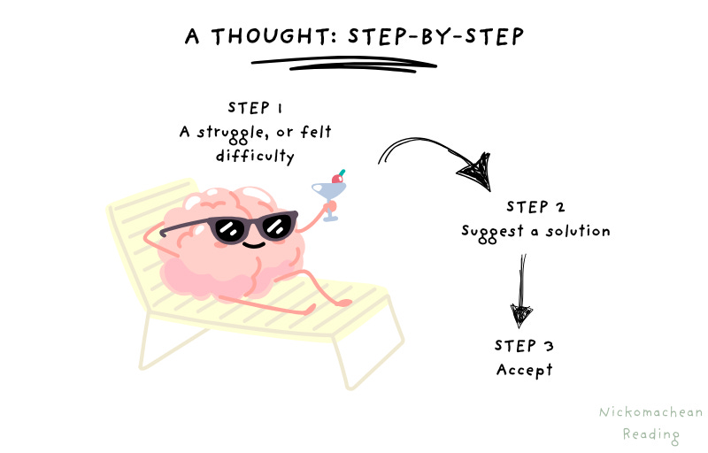

AI is amazing—it’s led to detection of breast cancer up to 5 years earlier than previously possible; it’s enabled flood forecasting up to 7 days earlier; you can start a new software business just by typing text. AI is also terrifying—it can do the work of graduate employees around 100 times quicker and people around the globe are (rightfully) wondering what is going to be left for them to do.
There is though, a clear area where humans are still, and will continue to be, superior. (Yes, I’m aware making predictions in such a rapidly progressing area is stupid, but I’m still doing it). The area is critical thinking. The good news is that although this may seem like an opaque concept, we can actually break it down step-by-step, work out which segments of it we can excel at and work out how to train this muscle, leaving us more valuable than ever in the world.
Let’s first look at what critical thinking is
... Thinking is one of those things that happens naturally—we rarely (dare I say it?) think about it. But to think critically is actually an intensive process. John Dewey breaks it down in his book, How We Think. The following outlines this step-by-step process of what is going on in your brain when you complete one piece of critical thinking.

As you can see, it’s quite an arduous process, particularly if we compare it to a regular (or non-critical) thought.
 ...
The World Economic Forum ranks critical thinking as one of the top three skills needed for success in the future workforce. Yet, if you listen to many AI commentators, you might think critical thinking is becoming obsolete—just a matter of time before AI can do it for you. But is that really the case? Let’s look at each step in detail.
How does an AI model perform at each step of the critical thinking process?
Let’s explain each of these steps using a relevant example; we’ll rank how AI performs at each step currently; and we’ll see where there are gaps for us humans to focus our energy on.
Step 1: A struggle, or felt difficulty
This is the realization that something is not understood. It comes via an observation (observation = noticing, reading, seeing, thinking etc).
For example, you might observe one morning after your first coffee that you’re still tired, even though for the past few months, that first hit of java has given you a nice, light buzz.
How does an AI model perform at this step? 0/10. AI can’t feel a struggle. It simply processes inputs based on patterns as directed by the user.
✅ What can you do? Learn to pay attention in more detail, be curious, work out why things are the way they are. Observe what you struggle with, observe what others struggle with.
Step 2: Defining the difficulty
The clearer you define what you’re struggling with, the better your thought will be. You’ll note it’s not a step in a non-critical thought, which is because most people skip straight to decision-making.
In the coffee example, a non-critical thought would briefly notice it and then move on (probably back to the coffee shop). A critical thought goes into more depth: Is it the coffee itself? Am I just extra tired today? Did I sleep poorly? You narrow it down to the core problem: Why isn’t caffeine having the same effect on me today?
How does an AI model perform at this step? 3/10. It can help define a known problem once the human notices it.
✅ What can you do? Take the time to define your struggle. The more you do this, the more natural it becomes.
Step 3: Suggest a solution
You’ve noticed something you don’t understand, you’ve made it clear what the problem is and now you’re coming up with possible solutions. You can get these possible solutions via thinking, reading, researching, talking to people etc. The number of suggestions is crucial here—basically the more the better.
Back to coffee: maybe the coffee was weaker? Maybe your tolerance has increased? Maybe the new coffee beans are different? Maybe it’s some external factor?
How does an AI model perform at this step? 10/10. AI excels here. It can produce a huge range of hypotheses faster than we ever could.
✅ What can you do? Use AI to expand your thinking horizon during this stage.
Step 4: Reasoning to decide on the validity
The way you determine each solution’s validity is by experimentation—via a thought experiment or a physical experiment.
Looking at our coffee example: you check and the new coffee is definitely caffeinated, you did sleep well last night and you only had one coffee yesterday. So you ask Google or an AI bot other factors that might be influencing it—you see that dehydration can lead to less impact from caffeine and note you went for a run this morning (humidity was through the roof too).
How does an AI model perform? 4/10. AI can perform logical reasoning based on known data, but it cannot run real-world experiments or feel bodily responses.
✅ What can you do? Rank your solutions in order and work out how to test them. Write down a hypothesis and observe the results. Whether you’re right or wrong, you will have learned something valuable.
Step 5: Accept, adjust or reject
Based on your experimentation results, you have to make the call on whether this is correct, if it needs to be adjusted or if it can be rejected—adding the results to your ongoing worldview.
After some reasoning in the coffee example, you conclude that dehydration is the likely cause, so you drink a glass of water and plan to monitor how caffeine affects you later in the day.
How does an AI model perform? 3/10. AI can evaluate inputs, but it lacks a personal evolving worldview.
✅ What can you do? Record results. Use what you discover to continuously reshape your mental models.
The role of Active Reading in training critical thinking
You can see with the coffee example that something as simple as caffeine not having its normal impact on you can be thought about deeply. Over time, this knowledge operates exactly like compounding interest.
But the challenge is that today’s world is designed to distract us—TV, smartphones, social media all pull us away from critical thinking. This means our critical thinking muscle is atrophying.
The good news? It can be trained, and Active Reading is the training ground.
Active Reading involves reading a book that is slightly above your current level and working to come to terms with it. If you don’t understand what’s being said, you struggle, then you research it, then you decide if you agree or not—the exact process of critical thinking.
“You must tackle books that are over your head. Only books of that sort will make you stretch your mind. And unless you stretch, you will not learn." — Mortimer Adler
Passive reading, on the other hand, mimics a regular thought. You simply accept what the author says. Over time, this leads to a worldview made of other people’s unexamined opinions.
Active Reading is strength training for the mind. It’s the unglamorous hours on the practice field when nobody’s watching. It will not give you an immediate billion-dollar idea. But it will make you into someone who can have one.
Over time, you’ll learn how to think critically, develop greater empathy and accumulate knowledge and understanding. That compounding growth in both wisdom and perspective makes you a human who remains more valuable than a robot.